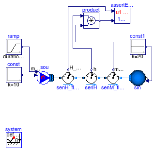
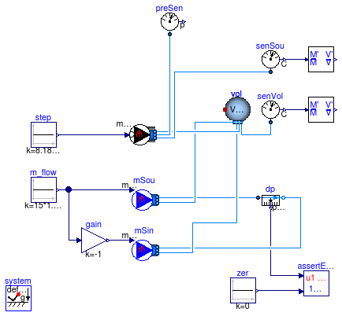
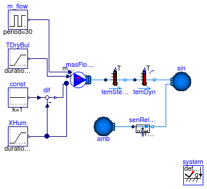
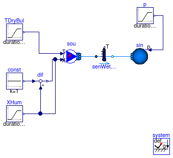
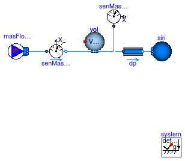
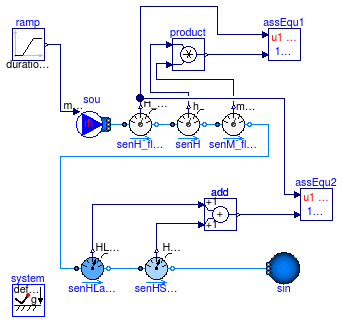
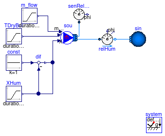

This package contains examples for the use of models that can be found in Buildings.Fluid.Sensors.
Extends from Modelica.Icons.ExamplesPackage (Icon for packages containing runnable examples).
| Name | Description |
|---|---|
| Test model for the enthalpy flow rate sensors | |
| Test model for the extra property sensor | |
| Test model for the dry bulb temperature sensor | |
| Test model for the wet bulb temperature sensor | |
| Test model for the mass fraction sensor | |
| Test model for the sensible and latent enthalpy flow rate sensors | |
| Test model for relative humidity sensor |
 Buildings.Fluid.Sensors.Examples.EnthalpyFlowRate
Buildings.Fluid.Sensors.Examples.EnthalpyFlowRate
model EnthalpyFlowRate "Test model for the enthalpy flow rate sensors" extends Modelica.Icons.Example; import Buildings; package Medium = Buildings.Media.IdealGases.SimpleAir;Buildings.Fluid.Sensors.EnthalpyFlowRate senH_flow(redeclare package Medium = Medium, m_flow_nominal=2) "Sensor for enthalpy flow rate"; Buildings.Fluid.Sources.MassFlowSource_h sou( use_m_flow_in=true, use_h_in=true, redeclare package Medium = Medium, nPorts=1); Buildings.Fluid.Sources.Boundary_ph sin(use_h_in=true, redeclare package Medium = Medium, nPorts=1); Modelica.Blocks.Sources.Ramp ramp( duration=1, height=-2, offset=1); Modelica.Blocks.Sources.Constant const(k=10); Modelica.Blocks.Sources.Constant const1(k=20); inner Modelica.Fluid.System system; Buildings.Fluid.Sensors.SpecificEnthalpyTwoPort senH(redeclare package Medium = Medium, m_flow_nominal=2, tau=0); Buildings.Fluid.Sensors.MassFlowRate senM_flow(redeclare package Medium = Medium); Buildings.Utilities.Diagnostics.AssertEquality assertEquality; Modelica.Blocks.Math.Product product; equationconnect(ramp.y, sou.m_flow_in); connect(const.y, sou.h_in); connect(const1.y, sin.h_in); connect(sou.ports[1], senH_flow.port_a); connect(senH_flow.port_b, senH.port_a); connect(senH.port_b, senM_flow.port_a); connect(senM_flow.port_b, sin.ports[1]); connect(senH_flow.H_flow, assertEquality.u1); connect(senH.h_out, product.u1); connect(senM_flow.m_flow, product.u2); connect(product.y, assertEquality.u2); end EnthalpyFlowRate;
Buildings.Fluid.Sensors.Examples.ExtraProperty
model ExtraProperty "Test model for the extra property sensor"
extends Modelica.Icons.Example;
import Buildings;
package Medium = Buildings.Media.GasesPTDecoupled.SimpleAir(extraPropertiesNames={"CO2"});
MixingVolumes.MixingVolume vol(
redeclare package Medium = Medium,
V=2*3*3,
nPorts=4,
m_flow_nominal=1E-6) "Mixing volume";
inner Modelica.Fluid.System system;
Sources.PrescribedExtraPropertyFlowRate sou(redeclare package Medium = Medium,
nPorts=3,
use_m_flow_in=true);
Modelica.Blocks.Sources.Constant step(k=8.18E-6);
Buildings.Fluid.Sensors.TraceSubstances senVol(
redeclare package Medium = Medium) "Sensor at volume";
Buildings.Fluid.Sensors.TraceSubstances senSou(
redeclare package Medium = Medium, substanceName="CO2")
"Sensor at source";
Modelica.Blocks.Sources.Constant m_flow(k=15*1.2/3600) "Fresh air flow rate";
Buildings.Fluid.Sources.MassFlowSource_T mSou(
redeclare package Medium = Medium,
use_m_flow_in=true,
nPorts=2);
Modelica.Blocks.Math.Gain gain(k=-1);
Buildings.Fluid.Sources.MassFlowSource_T mSin(
redeclare package Medium = Medium,
use_m_flow_in=true,
nPorts=2);
Buildings.Fluid.Sensors.Conversions.To_VolumeFraction masFraSou(
MMMea=Modelica.Media.
IdealGases.Common.SingleGasesData.CO2.MM);
Buildings.Fluid.Sensors.Conversions.To_VolumeFraction masFraVol(
MMMea=Modelica.Media.
IdealGases.Common.SingleGasesData.CO2.MM);
Buildings.Fluid.Sensors.RelativePressure dp(
redeclare package Medium = Medium);
Buildings.Utilities.Diagnostics.AssertEquality assertEquality(startTime=0,
threShold=1E-8);
Modelica.Blocks.Sources.Constant zer(k=0) "Zero signal";
Buildings.Fluid.Sensors.Pressure preSen( redeclare package Medium = Medium)
"Pressure sensor";
equation
connect(m_flow.y, mSou.m_flow_in);
connect(m_flow.y, gain.u);
connect(gain.y, mSin.m_flow_in);
connect(senSou.C, masFraSou.m);
connect(senVol.C, masFraVol.m);
connect(dp.p_rel, assertEquality.u1);
connect(zer.y, assertEquality.u2);
connect(mSou.ports[1], dp.port_a);
connect(mSin.ports[1], dp.port_b);
connect(mSou.ports[2], vol.ports[1]);
connect(mSin.ports[2], vol.ports[2]);
connect(vol.ports[4], senVol.port);
connect(sou.ports[1], vol.ports[3]);
connect(sou.ports[2], preSen.port);
connect(sou.ports[3], senSou.port);
connect(step.y, sou.m_flow_in);
end ExtraProperty;
Buildings.Fluid.Sensors.Examples.TemperatureDryBulb
Extends from Modelica.Icons.Example (Icon for runnable examples).
model TemperatureDryBulb "Test model for the dry bulb temperature sensor" extends Modelica.Icons.Example; package Medium = Buildings.Media.PerfectGases.MoistAir "Medium model";Buildings.Fluid.Sources.Boundary_pT sin( redeclare package Medium = Medium, nPorts=1, T=293.15); Buildings.Fluid.Sources.MassFlowSource_T masFloRat( redeclare package Medium = Medium, use_T_in=true, use_m_flow_in=true, nPorts=1); Modelica.Blocks.Sources.Ramp TDryBul( height=10, duration=1, offset=273.15 + 30) "Dry bulb temperature"; Modelica.Blocks.Sources.Ramp XHum( height=(0.0133 - 0.0175), offset=0.0175, duration=60) "Humidity concentration"; Modelica.Blocks.Sources.Constant const(k=1); Modelica.Blocks.Math.Feedback feedback; Buildings.Fluid.Sensors.TemperatureTwoPort temSteSta( redeclare package Medium = Medium, m_flow_nominal=2, tau=0) "Steady state temperature sensor"; inner Modelica.Fluid.System system; Modelica.Blocks.Sources.Pulse m_flow( offset=-1, amplitude=2, period=30) "Mass flow rate"; Buildings.Fluid.Sensors.TemperatureTwoPort temDyn( redeclare package Medium = Medium, m_flow_nominal=2, initType=Modelica.Blocks.Types.Init.InitialState, T_start=293.15); equationconnect(TDryBul.y, masFloRat.T_in); connect(const.y, feedback.u1); connect(XHum.y, feedback.u2); connect(XHum.y, masFloRat.X_in[1]); connect(feedback.y, masFloRat.X_in[2]); connect(masFloRat.ports[1], temSteSta.port_a); connect(m_flow.y, masFloRat.m_flow_in); connect(temSteSta.port_b, temDyn.port_a); connect(temDyn.port_b, sin.ports[1]); end TemperatureDryBulb;
Buildings.Fluid.Sensors.Examples.TemperatureWetBulb
Extends from Modelica.Icons.Example (Icon for runnable examples).
model TemperatureWetBulb "Test model for the wet bulb temperature sensor" extends Modelica.Icons.Example; import Buildings; package Medium = Buildings.Media.PerfectGases.MoistAir "Medium model";Modelica.Blocks.Sources.Ramp p( duration=1, offset=101325, height=250); Buildings.Fluid.Sources.Boundary_pT sin( redeclare package Medium = Medium, use_p_in=true, nPorts=1, T=293.15); Buildings.Fluid.Sensors.TemperatureWetBulbTwoPort senWetBul(redeclare package Medium = Medium, m_flow_nominal=1, tau=0) "Wet bulb temperature sensor"; Buildings.Fluid.Sources.MassFlowSource_T massFlowRate( redeclare package Medium = Medium, m_flow=1, use_T_in=true, use_X_in=true, nPorts=1); Modelica.Blocks.Sources.Ramp TDryBul( height=10, offset=273.15 + 30, duration=50) "Dry bulb temperature"; Modelica.Blocks.Sources.Ramp XHum( height=(0.0133 - 0.0175), offset=0.0175, duration=50) "Humidity concentration"; Modelica.Blocks.Sources.Constant const(k=1); Modelica.Blocks.Math.Feedback feedback; inner Modelica.Fluid.System system; Buildings.Fluid.Sensors.MassFraction masFra( redeclare package Medium = Medium) "Mass fraction"; equationconnect(TDryBul.y, massFlowRate.T_in); connect(const.y, feedback.u1); connect(XHum.y, feedback.u2); connect(XHum.y, massFlowRate.X_in[1]); connect(feedback.y, massFlowRate.X_in[2]); connect(p.y, sin.p_in); connect(massFlowRate.ports[1], senWetBul.port_a); connect(senWetBul.port_b, sin.ports[1]); connect(senWetBul.port_a, masFra.port); end TemperatureWetBulb;
Buildings.Fluid.Sensors.Examples.MassFraction
Extends from Modelica.Icons.Example (Icon for runnable examples).
model MassFraction "Test model for the mass fraction sensor"
extends Modelica.Icons.Example;
import Buildings;
package Medium = Buildings.Media.PerfectGases.MoistAirUnsaturated
"Medium model";
Buildings.Fluid.Sources.Boundary_pT sin( redeclare package Medium
= Medium,
T=293.15,
nPorts=1);
Buildings.Fluid.Sources.MassFlowSource_T masFloRat(
redeclare package Medium = Medium,
use_m_flow_in=false,
use_T_in=false,
X={0.02,0.98},
m_flow=10,
nPorts=1);
inner Modelica.Fluid.System system;
Buildings.Fluid.Sensors.MassFraction senMasFra2(redeclare package Medium =
Medium) "Mass fraction";
Buildings.Fluid.MixingVolumes.MixingVolume vol(
redeclare package Medium = Medium,
V=1,
nPorts=3,
m_flow_nominal=10) "Volume";
Buildings.Fluid.FixedResistances.FixedResistanceDpM dp(
redeclare package Medium = Medium,
m_flow_nominal=10,
dp_nominal=200);
Buildings.Fluid.Sensors.MassFractionTwoPort senMasFra1(redeclare package
Medium = Medium, m_flow_nominal=10);
equation
connect(dp.port_b, sin.ports[1]);
connect(masFloRat.ports[1], senMasFra1.port_a);
connect(senMasFra1.port_b, vol.ports[1]);
connect(vol.ports[2], dp.port_a);
connect(vol.ports[3], senMasFra2.port);
end MassFraction;
Buildings.Fluid.Sensors.Examples.MoistAirEnthalpyFlowRate
model MoistAirEnthalpyFlowRate "Test model for the sensible and latent enthalpy flow rate sensors" extends Modelica.Icons.Example; import Buildings; package Medium = Buildings.Media.PerfectGases.MoistAirUnsaturated;Buildings.Fluid.Sensors.EnthalpyFlowRate senH_flow(redeclare package Medium = Medium, m_flow_nominal=1) "Sensor for enthalpy flow rate"; Buildings.Fluid.Sources.MassFlowSource_T sou( use_m_flow_in=true, redeclare package Medium = Medium, nPorts=1, X=Medium.X_default, T=293.15); Buildings.Fluid.Sources.Boundary_pT sin( redeclare package Medium = Medium, nPorts=1, T=313.15, X={0.02,0.98}); Modelica.Blocks.Sources.Ramp ramp( duration=1, height=-2, offset=1); inner Modelica.Fluid.System system; Buildings.Fluid.Sensors.SpecificEnthalpyTwoPort senH(redeclare package Medium = Medium, m_flow_nominal=1, tau=0); Buildings.Fluid.Sensors.MassFlowRate senM_flow(redeclare package Medium = Medium); Buildings.Utilities.Diagnostics.AssertEquality assEqu1; Modelica.Blocks.Math.Product product; Buildings.Fluid.Sensors.LatentEnthalpyFlowRate senHLat_flow(redeclare package Medium = Medium, m_flow_nominal=1) "Sensor for latent enthalpy flow rate"; Buildings.Fluid.Sensors.SensibleEnthalpyFlowRate senHSen_flow(redeclare package Medium = Medium, m_flow_nominal=1) "Sensor for sensible enthalpy flow rate"; Modelica.Blocks.Math.Add add1; Buildings.Utilities.Diagnostics.AssertEquality assEqu2; equationconnect(ramp.y, sou.m_flow_in); connect(sou.ports[1], senH_flow.port_a); connect(senH_flow.port_b, senH.port_a); connect(senH.port_b, senM_flow.port_a); connect(senH_flow.H_flow, assEqu1.u1); connect(senH.h_out, product.u1); connect(senM_flow.m_flow, product.u2); connect(product.y, assEqu1.u2); connect(senHLat_flow.H_flow, add1.u1); connect(senHSen_flow.H_flow, add1.u2); connect(senM_flow.port_b, senHLat_flow.port_a); connect(senHLat_flow.port_b, senHSen_flow.port_a); connect(senH_flow.H_flow, assEqu2.u1); connect(add1.y, assEqu2.u2); connect(senHSen_flow.port_b, sin.ports[1]); end MoistAirEnthalpyFlowRate;
Buildings.Fluid.Sensors.Examples.RelativeHumidity
Extends from Modelica.Icons.Example (Icon for runnable examples).
model RelativeHumidity "Test model for relative humidity sensor" extends Modelica.Icons.Example; import Buildings; package Medium = Buildings.Media.PerfectGases.MoistAir "Medium model";Buildings.Fluid.Sources.Boundary_pT sin( redeclare package Medium = Medium, use_p_in=false, T=293.15, nPorts=1); Buildings.Fluid.Sources.MassFlowSource_T massFlowRate( redeclare package Medium = Medium, m_flow=1, use_T_in=true, use_X_in=true, nPorts=2, use_m_flow_in=true); Modelica.Blocks.Sources.Ramp TDryBul( height=10, duration=1, offset=273.15 + 30) "Dry bulb temperature"; Modelica.Blocks.Sources.Ramp XHum( duration=1, height=(0.0133 - 0.0175), offset=0.0175) "Humidity concentration"; Modelica.Blocks.Sources.Constant const(k=1); Modelica.Blocks.Math.Feedback feedback; inner Modelica.Fluid.System system; Buildings.Fluid.FixedResistances.FixedResistanceDpM dp( redeclare package Medium = Medium, m_flow_nominal=10, dp_nominal=200); Buildings.Fluid.Sensors.RelativeHumidity senRelHum(redeclare package Medium = Medium); Modelica.Blocks.Sources.Ramp m_flow( duration=1, height=-2, offset=1) "Mass flow rate"; Buildings.Fluid.Sensors.RelativeHumidityTwoPort relHum(redeclare package Medium = Medium, m_flow_nominal=1, initType=Modelica.Blocks.Types.Init.InitialState); equationconnect(TDryBul.y, massFlowRate.T_in); connect(const.y, feedback.u1); connect(XHum.y, feedback.u2); connect(XHum.y, massFlowRate.X_in[1]); connect(feedback.y, massFlowRate.X_in[2]); connect(dp.port_a, massFlowRate.ports[1]); connect(m_flow.y, massFlowRate.m_flow_in); connect(dp.port_b, relHum.port_a); connect(relHum.port_b, sin.ports[1]); connect(massFlowRate.ports[2], senRelHum.port); end RelativeHumidity;